The Greek army contained two types of soldiers: the upper class and the lower class soldiers. If there were a total of 5 upper class soldiers, and 10 lower class soldiers in a certain part of Athens, and the battle of Thermopylae demands a force of 4 upper class soldiers and 8 lower class soldiers, how many different battalions can be sent? Let's think step by step and output the final answer within \boxed{}.
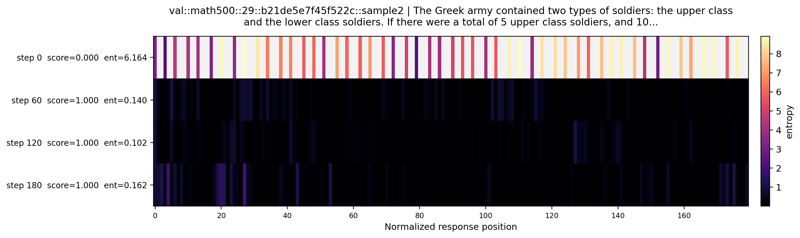
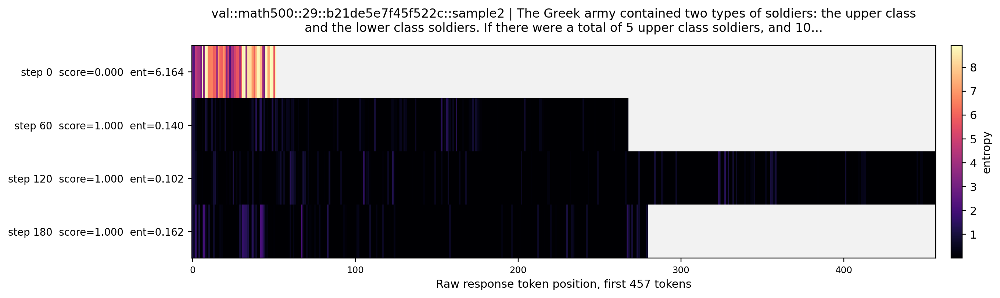
| step | score | mean entropy | len | hottest tokens | output preview |
|---|---|---|---|---|---|
| 0 | 0.000 | 6.164 | 52.0 | �@32=9.190, 轺@8=9.007, �@6=8.841, 骖@48=8.821, :@49=8.810, השא@45=8.785 | Thanks, answer with reasoning.. 釮轺 Dalya MOSA 仅供参考，先看看，print每种 battalion公式，直接上代码： 柰玟 居An意 x ： Protective倭朝 萌 השא募鲞骖 : hứng |
| 60 | 1.000 | 0.140 | 268.0 | Let@153=1.425, .@162=1.335, it@156=1.333, done@39=1.305, .@42=1.290, @49=1.169 | To solve this problem, we need to determine the number of ways to choose 4 upper class soldiers out of 5 and 8 lower class soldiers out of 10. This can be done using combinations. The number of ways to choose 4 soldiers from 5 is given by the combination formula \( \binom{5}{4}... |
| 120 | 1.000 | 0.102 | 457.0 | First@105=1.526, Now@323=1.441, verify@327=1.390, ,@60=1.354, :@123=1.223, with@329=1.162 | To determine the number of different battalions that can be sent to the battle of Thermopylae, we need to calculate the number of ways to choose 4 upper class soldiers out of 5 and 8 lower class soldiers out of 10. This is a combinatorial problem, and the number of ways to choos... |
| 180 | 1.000 | 0.162 | 280.0 | The@67=2.099, formula@42=2.059, selecting@7=1.906, :@43=1.808, combinations@31=1.621, can@2=1.578 | The problem can be broken down into selecting 4 upper class soldiers out of 5 and 8 lower class soldiers out of 10. This involves combinations, which can be represented using the binomial coefficient formula: \[ \binom{n}{k} = \frac{n!}{k! (n-k)!} \] The number of ways to choose... |
$\overline{BC}$ is parallel to the segment through $A$, and $AB = BC$. What is the number of degrees represented by $x$? [asy] draw((0,0)--(10,0)); draw((0,3)--(10,3)); draw((2,3)--(8,0)); draw((2,3)--(4,0)); label("$A$",(2,3),N); label("$B$",(4,0),S); label("$C$",(8,0),S); label("$124^{\circ}$",(2,3),SW); label("$x^{\circ}$",(4.5,3),S); [/asy] Let's think step by step and output the final answer within \boxed{}.
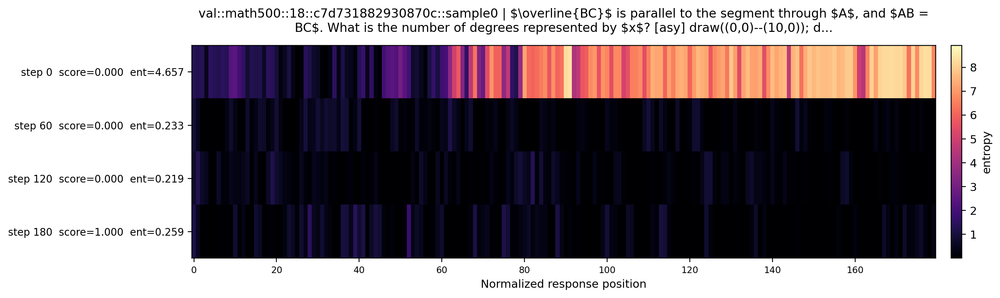
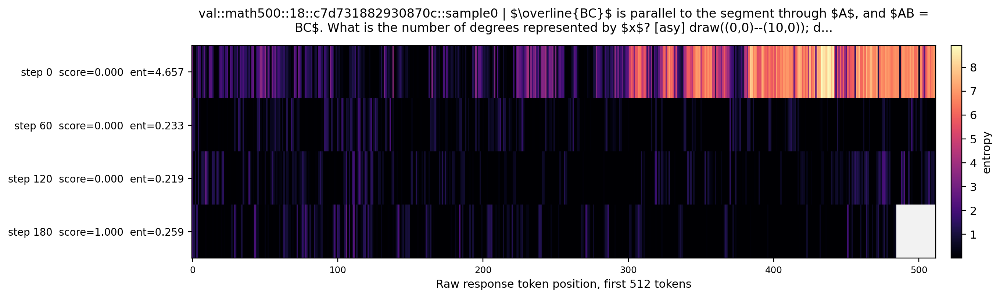
| step | score | mean entropy | len | hottest tokens | output preview |
|---|---|---|---|---|---|
| 0 | 0.000 | 4.657 | 863.0 | 分钟后@433=9.005, 还@438=8.808, ste@807=8.658, _gap@855=8.643, maxim@840=8.620, over@839=8.608 | ```python # We are given that AB = BC and that segment BC is collinear with the segment through A. # AB and BC form a straight line, and therefore angle B is 2 degrees more than the concurrency point because it is supplementary angles. # angle AB = x degrees and angle BCA = 124°... |
| 60 | 0.000 | 0.233 | 608.0 | Therefore@136=2.095, Given@0=2.042, angle@114=1.850, alternate@123=1.842, \(@115=1.710, Let@495=1.704 | Given: 1. \(\overline{BC}\) is parallel to the segment through \(A\). 2. \(AB = BC\). 3. \( \angle ABR = 124^\circ \). We need to find the value of \(x\), which is the measure of \(\angle ABC\). Steps: 1. Since \(\overline{BC}\) is parallel to the segment through \(A\), the angl... |
| 120 | 0.000 | 0.219 | 1039.0 | the@9=2.584, manually@720=2.278, one@490=2.262, directly@476=2.089, at@115=2.030, but@488=1.945 | First, let's analyze the given problem and the relationships between the angles. 1. We are given that $\overline{BC}$ is parallel to the segment through $A$. 2. Since $AB = BC$, triangle $ABC$ is isosceles, with $\angle BAC = \angle BCA$. 3. We are also given that the angle at $... |
| 180 | 1.000 | 0.259 | 485.0 | Let@106=2.662, measure@111=2.345, \@142=2.116, Since@43=2.066, Since@184=2.037, \(@78=2.031 | Given: - \(\overline{BC}\) is parallel to the segment through \(A\). - \(AB = BC\). - We need to find the number of degrees represented by \(x\). Since \( \overline{BC} \) is parallel to the segment through \( A \), we can use the properties of parallel lines and transversals. T... |
Let $a$ be a positive real number such that all the roots of \[x^3 + ax^2 + ax + 1 = 0\]are real. Find the smallest possible value of $a.$ Let's think step by step and output the final answer within \boxed{}.
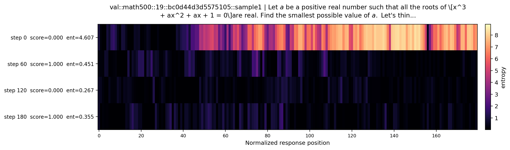
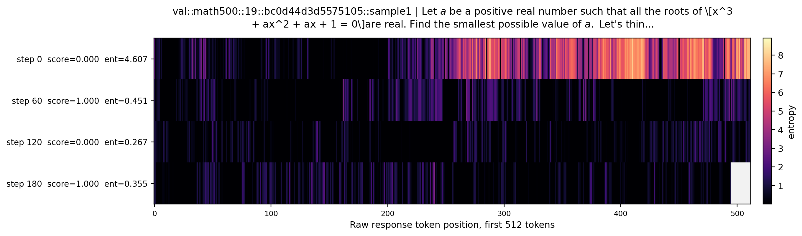
| step | score | mean entropy | len | hottest tokens | output preview |
|---|---|---|---|---|---|
| 0 | 0.000 | 4.607 | 965.0 | adjusted@756=9.100, ney@787=8.838, 四五@726=8.758, allowing@779=8.756, ars@764=8.745, driving@808=8.640 | Given the polynomial equation: \[ x^3 + ax^2 + ax + 1 = 0 \] For the roots to be real, let's first understand the behavior of the polynomial. 1. We will denote the roots of the polynomial as \( \alpha, \beta, \gamma \). 2. The polynomial can be written using its roots as: \[ (x... |
| 60 | 1.000 | 0.451 | 2048.0 | How@1465=4.258, smaller@1224=4.256, positive@1467=3.964, validate@1220=3.728, avoid@853=3.557, relational@855=3.549 | Given the polynomial \(x^3 + ax^2 + ax + 1 = 0\), we need to find the smallest possible value of \(a\) such that all roots are real. 1. **Understanding the polynomial:** Let \(x_1, x_2, x_3\) be the roots of the polynomial \(x^3 + ax^2 + ax + 1 = 0\). By Vieta's formulas, we kno... |
| 120 | 0.000 | 0.267 | 953.0 | method@610=2.360, calculus@612=2.274, Given@140=2.182, suggests@582=2.167, solve@464=2.083, one@269=2.038 | To solve the problem, we need to analyze the cubic equation \(x^3 + ax^2 + ax + 1 = 0\) and find the smallest possible value of \(a\) such that all the roots of the equation are real. A cubic polynomial \(x^3 + ax^2 + bx + c\) has all real roots if it can be expressed as a produ... |
| 180 | 1.000 | 0.355 | 495.0 | shape@240=3.295, the@239=2.451, properties@146=2.319, possibility@135=2.214, other@145=2.189, recognizing@204=2.155 | To find the smallest possible value of \(a\) such that all the roots of \(x^3 + ax^2 + ax + 1 = 0\) are real, we need to analyze the polynomial and use some calculus and algebraic techniques. Let's denote the polynomial by \(P(x) = x^3 + ax^2 + ax + 1\). For \(P(x)\) to have all... |
Evaluate $(1+2i)6-3i$. Let's think step by step and output the final answer within \boxed{}.
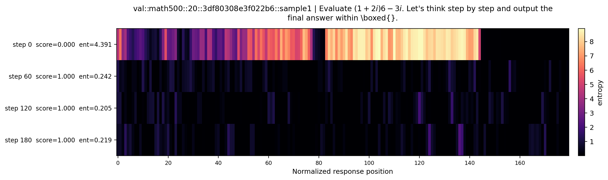
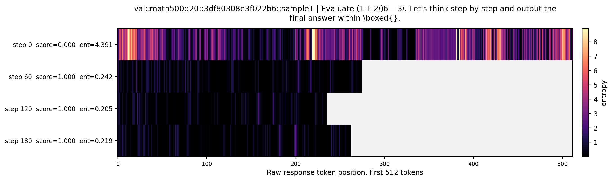
| step | score | mean entropy | len | hottest tokens | output preview |
|---|---|---|---|---|---|
| 0 | 0.000 | 4.391 | 2048.0 | 强度@1253=10.005, ec@1191=9.714, ˂@220=9.667, 查@1257=9.634, 绕@1370=9.610, 被@1099=9.590 | Evaluate T M A处给定提供的信息在哪里？。 Ｔ矩阵 Customer order problem in the book "Linear Algebra 091 4", in Problem 5. If 1234ac3 is a perfect square, and the letters represent the digits from 0 to 9, where 1 to 4 are used, 0 <= a,b,c <= 9, a, b, c different, A, B, C A, B, C distinct, differe... |
| 60 | 1.000 | 0.242 | 275.0 | expression@203=1.919, the@21=1.774, _by@217=1.740, To@0=1.725, go@76=1.592, (@44=1.559 | To solve the expression $(1+2i)6-3i$, we can break it down into the following steps: 1. Distribute the 6 to the term inside the parentheses. 2. Combine like terms (the real parts and the imaginary parts). 3. Simplify the expression to get the final answer in the form of $a + bi$... |
| 120 | 1.000 | 0.205 | 236.0 | scalar@158=1.945, simpler@22=1.787, i@175=1.657, in@31=1.338, To@0=1.330, can@17=1.218 | To evaluate \((1+2i)6 - 3i\), we can break it down into simpler steps. First, distribute the 6 in the expression \((1+2i)6\): \[ (1+2i)6 = 6 \cdot 1 + 6 \cdot 2i = 6 + 12i \] Now, we need to subtract \(3i\) from the result: \[ 6 + 12i - 3i = 6 + (12i - 3i) = 6 + 9i \] The final... |
| 180 | 1.000 | 0.219 | 263.0 | ing@200=2.646, scalar@182=1.976, subtract@199=1.912, _complex@201=1.795, calculate@5=1.420, start@65=1.359 | First, we need to calculate the expression $(1+2i) \cdot 6 - 3i$. We can break this down into two steps: 1. Multiply the complex number $(1+2i)$ by 6. 2. Subtract $3i$ from the result of step 1. Let's start by calculating $(1+2i) \cdot 6$: \[ (1+2i) \cdot 6 = 1 \cdot 6 + (2i) \c... |
The expression $2\cdot 3 \cdot 4\cdot 5+1$ is equal to 121, since multiplication is carried out before addition. However, we can obtain values other than 121 for this expression if we are allowed to change it by inserting parentheses. For example, we can obtain 144 by writing \[ (2\cdot (3\cdot 4)) \cdot (5+1) = 144. \]In total, how many values can be obtained from the expression $2\cdot 3\cdot 4 \cdot 5 + 1$ by inserting parentheses? (Note that rearranging terms is not allowed, only inserting parentheses). Let's...
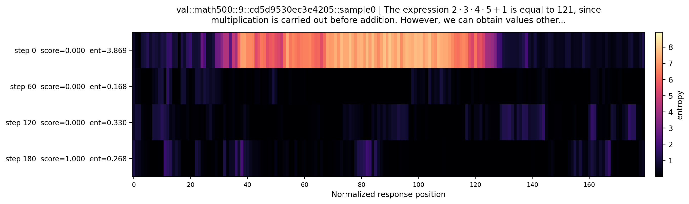
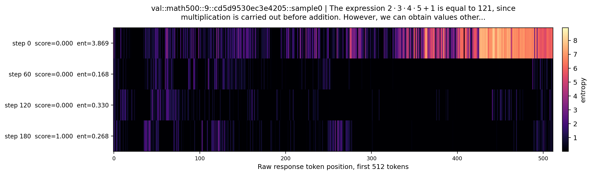
| step | score | mean entropy | len | hottest tokens | output preview |
|---|---|---|---|---|---|
| 0 | 0.000 | 3.869 | 2048.0 | 环@833=9.090, be@942=8.871, ),@835=8.780, _@876=8.558, 头@858=8.551, ,@892=8.545 | To solve this problem, we need to explore all possible ways to insert parentheses into the expression \(2 \cdot 3 \cdot 4 \cdot 5 + 1\) and evaluate them to determine the number of distinct values obtained. We can break down the steps as follows: 1. **Python Implementation**: We... |
| 60 | 0.000 | 0.168 | 896.0 | Define@540=2.541, Consider@110=2.426, Identify@60=2.330, as@93=2.200, based@543=2.180, group@120=2.171 | To determine the number of distinct values that can be obtained from the expression \(2 \cdot 3 \cdot 4 \cdot 5 + 1\) by inserting parentheses, we need to consider all possible ways to group the multiplications. Here are the steps to find the solution: 1. Identify the expression... |
| 120 | 0.000 | 0.330 | 1062.0 | Case@568=3.222, that@952=3.051, re@1030=3.018, gives@953=2.912, calculation@781=2.550, again@1034=2.452 | To solve the problem, we need to consider how the expression evaluates differently based on the placement of parentheses. Given the expression \(2 \cdot 3 \cdot 4 \cdot 5 + 1\), we can modify it by inserting parentheses. We need to evaluate all possible ways to insert parenthese... |
| 180 | 1.000 | 0.268 | 572.0 | incorrectly@261=2.907, only@122=2.810, order@258=2.731, consider@42=2.677, By@103=2.432, analyze@38=2.260 | We need to determine the possible values that can be obtained from the expression $2 \cdot 3 \cdot 4 \cdot 5 + 1$ by inserting parentheses. We'll analyze the expression and consider all possible ways of inserting parentheses. The expression $2 \cdot 3 \cdot 4 \cdot 5 + 1$ withou... |
How many positive whole-number divisors does 196 have? Let's think step by step and output the final answer within \boxed{}.
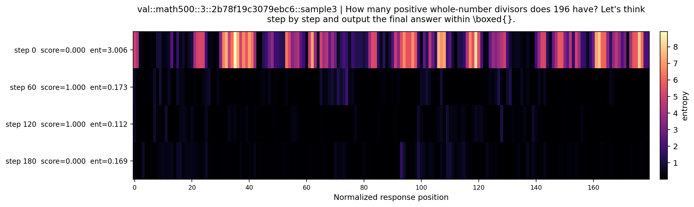
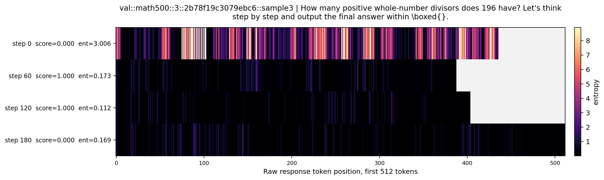
| step | score | mean entropy | len | hottest tokens | output preview |
|---|---|---|---|---|---|
| 0 | 0.000 | 3.006 | 436.0 | .@101=10.311, 🤧@99=10.232, ﯓ@93=10.109, gui@89=10.075, gly@91=10.006, How@102=9.974 | :perfect_square To determine the number of positive whole-number divisors of 196, we should first factorize the number into its prime factors. ## Step-by-Step Analysis: 1. **Factorize 196**: Object of the typeDurabilityfactorize Please reason step by step, and put your final ans... |
| 60 | 1.000 | 0.173 | 388.0 | choices@160=2.387, Here@275=2.007, :@232=1.674, (@154=1.672, reasoning@283=1.487, listing@222=1.415 | To find the number of positive whole-number divisors of 196, we first need to find its prime factorization. The number 196 can be factored as \(196 = 2^2 \times 7^2\). If a number has the prime factorization \(p_1^{e_1} \times p_2^{e_2} \times \cdots \times p_k^{e_k}\), then the... |
| 120 | 1.000 | 0.112 | 404.0 | div@314=2.093, Number@289=1.496, first@17=1.439, So@223=1.323, ```@246=1.262, Once@26=1.156 | To determine the number of positive whole-number divisors of 196, we first need to find its prime factorization. Once we have the prime factorization, we can use it to determine the total number of divisors. The prime factorization of 196 is: \[ 196 = 2^2 \times 7^2 \] If a numb... |
| 180 | 0.000 | 0.169 | 1006.0 | Car@523=4.223, is@525=3.131, making@526=2.685, honey@558=2.432, for@612=2.400, since@144=2.204 | To determine the number of positive whole-number divisors of 196, we need to: 1. Find the prime factorization of 196. 2. Use the formula for finding the total number of divisors based on the prime factorization. ### Step-by-step solution: 1. **Prime Factorization of 196:** We st... |